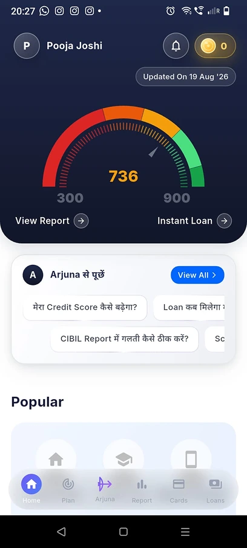
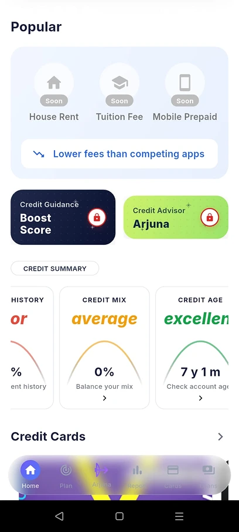
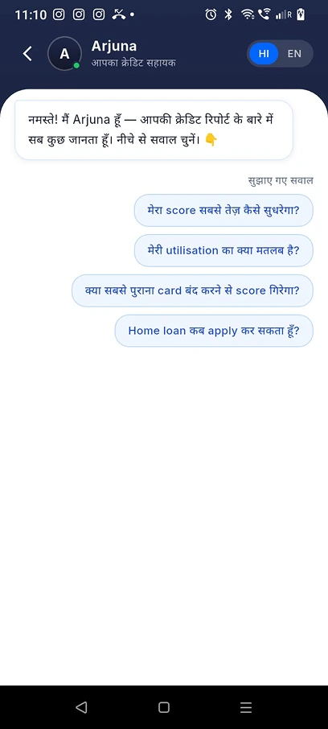
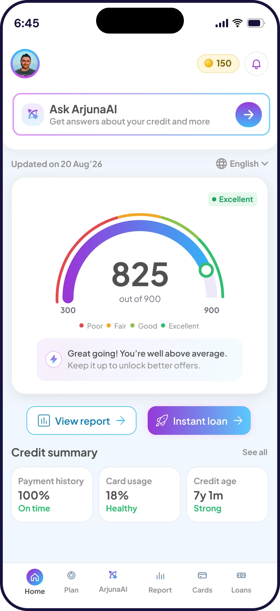
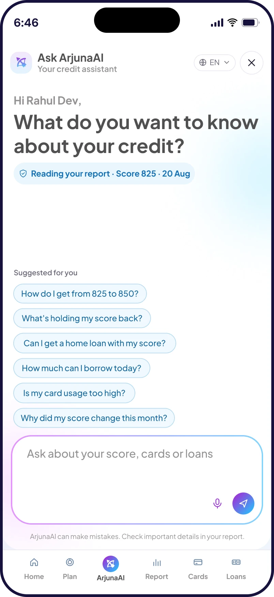
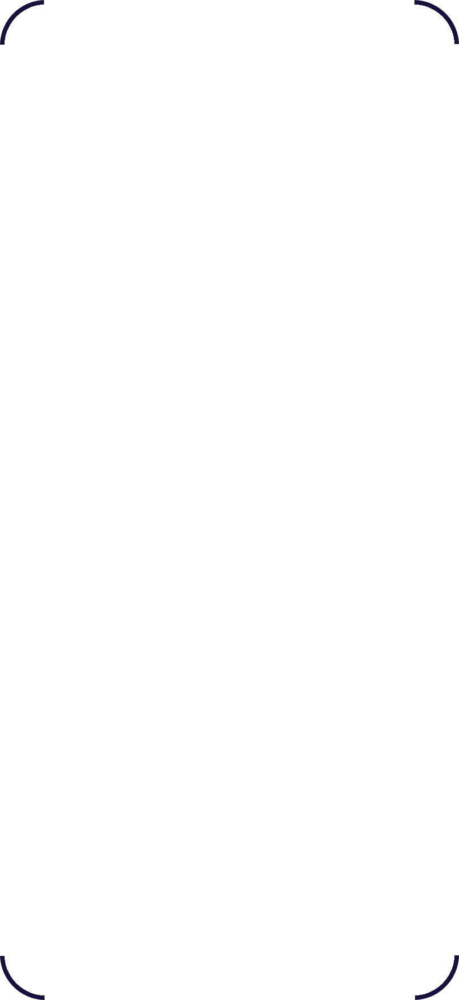

BoostScore shows people their credit score and offers loans and cards. It also has an AI assistant, Arjuna, that most people would never find. I redesigned the Home screen and the Arjuna chat so the score explains itself, the next step is obvious, and help is one tap away.
I went through the live app screen by screen and noted where it got in the way. Six things stood out.
Arjuna sat below the score as a strip of questions cut off at the screen edge. A second, locked “Credit Advisor Arjuna” card further down made it unclear which one to use.
A gauge showed 736, but nothing said whether that was good or what it meant for getting a loan.
View Report and Instant Loan were small text links of equal weight, so nothing pointed to the next step.
The “Popular” block showed House Rent, Tuition Fee and Mobile Prepaid, all marked “Soon”.
Payment history, credit mix and credit age sat in a row cut off at both edges.
The chat asked people to pick from four questions. There was no way to type your own.



Each fix answers the problem with the same number. The product's structure stays the same, so it fits into the existing app.
“Ask ArjunaAI” is now the first card on Home and opens a full-screen chat. One entry point instead of two.
The score now has a label, a colour scale and one line of feedback, so people know where they stand.
Both actions became real buttons. Instant loan is the primary one, in the blue-purple gradient that now marks AI and key actions.
The “Soon” placeholders are gone, so the score, actions and summary fit on the first screen.
Payment history, card usage and credit age sit side by side, each with a plain-language verdict.
A text box and voice input, with suggestions based on the person’s own score. Language moved to a simple picker.


Tap a number on the screen to jump to its note. Change 5 is shown in the animation below.
Moved the ArjunaAI entry point higher on the Home screen so users can access assistance without first scrolling through the financial content.
Language is treated as a preference rather than navigation, keeping the navbar focused and uncluttered.
The score is paired with contextual feedback and relevant actions, helping users understand their score and what they can do next.
Used the purple-blue gradient for the primary action to reinforce the AI/brand language.
Moved ArjunaAI higher in the Home hierarchy and designed it to expand into a focused chat experience, making AI easier to discover while keeping the dashboard focused on financial information.

My next step is a quick test: give five people the old and new Home and ask two things: where would you go to ask about your score, and what does your score mean for getting a loan? If people find ArjunaAI faster and can explain their score in their own words, the new hierarchy is working.